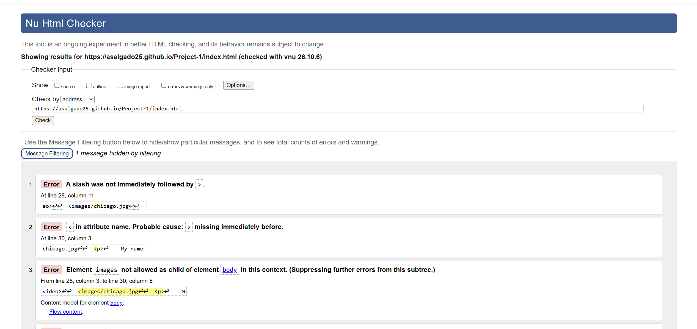

My name is Abisai Salgado and I am currently studying Applied Cybersecurity and Information Technology at Illinois Institute of Technology. This website will show a little information about me and my education at this school and what I like doing. A basic introduction about me as follows.
At a personal level, I have always been interested in technology and crime. I built my first computer back in high school and ever since have been interested in technology, especially the hardware side. I enjoy hands-on work and learning how computer systems function. I have also been interested in crime cases and anything related to investigations from the FBI. That is when I decided to look into a career that combines both technology and crime, which led me to cybersecurity and cyber forensics.
I have lived in Chicago, Illinois basically my whole life. I spend much of my time studying and working. I like learning new technologies and working on personal projects. As of right now, I am teaching myself how to navigate Linux because of its flexibility and strong security features. I am also taking courses through TryHackMe.
Throughout my education I have developed an interest in ethical hacking and digital forensics. These fields require strong attention to detail and the ability to think critically when solving complex problems.
For me, Chicago is an exciting city with many educational and professional opportunities. Being able to attend college in Chicago has allowed me to meet new people from different backgrounds and experience a very diverse environment.
My short-term goal is to complete my bachelor's degree while obtaining CompTIA certifications before graduation. My long-term goal is to work for a federal agency such as the FBI, NSA, or Secret Service.
